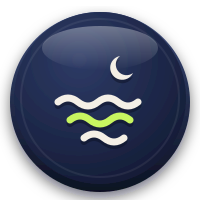
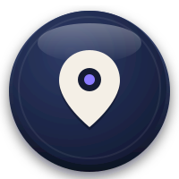

FOGWALK · DISCOVERY ICON SET
발견 카테고리 아이콘 — 3D 클레이 코인 25종
딥네이비 face + 아이보리 글리프 + 상단 gloss, 등급 중립 (테두리는 앱에서). 요청 20종 + 빠진 요소 5종 추가: 호수 · 해변 · 숲 · 시장 · 케이블카 · SVG 200×200, 투명 배경 ·
icons/ 폴더TOP FILTERS · 5
{{ ic.name }}
{{ ic.id }}.svg
{{ g.label }}
{{ ic.name }}
{{ ic.id }}
GLYPH ONLY · 마커 축소 상태용 · icons/glyph/
← 축소 마커 예시 (앱에서 배경원+등급링)
TRANSPARENCY CHECK · 라이트 / 맵 배경

